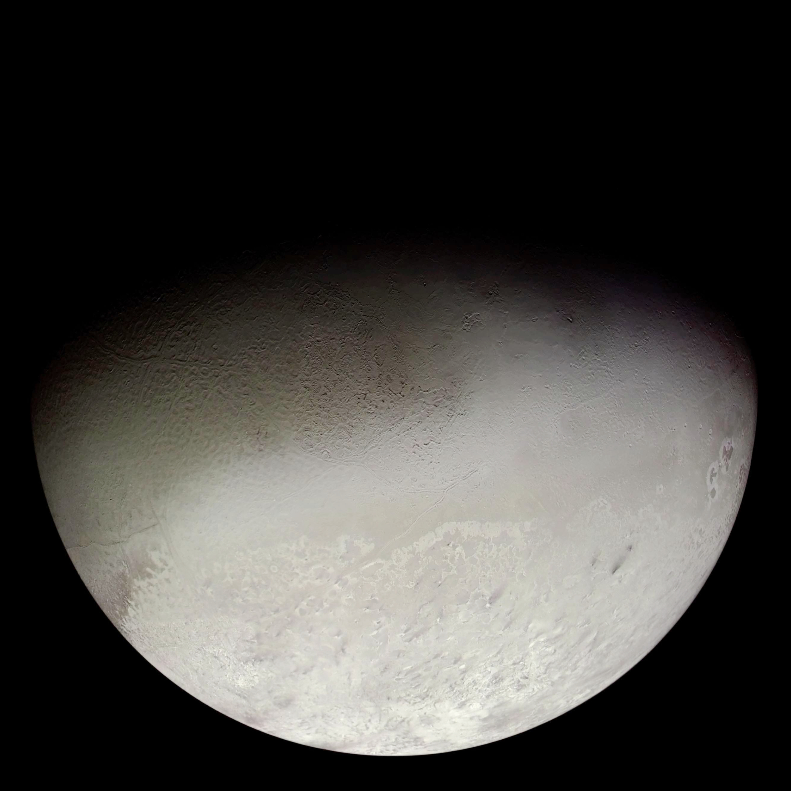

Capture, in astronomy, refers to any process by which a body or particle becomes gravitationally or physically bound to another object. The term encompasses three physically distinct phenomena: gravitational capture of macroscopic bodies into orbit, neutron capture by atomic nuclei, and electron capture by proton-rich nuclei.
Gravitational Capture
Gravitational capture occurs when a body initially following a hyperbolic, unbound trajectory loses sufficient energy to enter a closed, stable orbit around a more massive object. In a purely two-body encounter, the total mechanical energy is conserved, so a hyperbolic trajectory cannot spontaneously become elliptical — a third body or a dissipative mechanism is required to remove the excess energy and achieve permanent binding.

NASA / Voyager 2 (public domain)
.jpg){kind=link}
Several energy-loss mechanisms can facilitate capture. Gas drag within a protoplanetary disc can dissipate kinetic energy from a passing body. Tidal circularisation gradually reduces orbital eccentricity through deformation of the captured body or its host. In binary dissociation, a close encounter with a binary pair or co-orbiting pair disrupts the binary, with one component carrying away energy whilst the other remains bound — this mechanism has been invoked to explain the capture of Neptune’s moon Triton. Agnor & Hamilton (2006) proposed that Triton was a member of a trans-Neptunian binary from the Kuiper Belt; a close encounter with Neptune disrupted the pair, leaving Triton on a bound but retrograde orbit. The orbit subsequently circularised over roughly 1–2 Gyr through tidal dissipation. Triton remains the only large satellite in the Solar System with a retrograde orbit, and its large mass together with that retrograde sense are compelling evidence for an origin by capture rather than in-situ formation.
The region within which a planet’s gravity dominates over that of the Sun is the Hill sphere. Jupiter’s Hill sphere extends to approximately 0.35 AU; Neptune’s to roughly 0.77 AU. Bodies must lose enough energy to fall below the local escape velocity within this region in order for capture to persist. The irregular moons of the giant planets — those with distant, highly inclined, or retrograde orbits expressed through their orbital elements — are widely regarded as captured bodies, most likely asteroids or Kuiper Belt objects acquired during the early Solar System.
Temporary gravitational capture is also possible. The small asteroid 2006 RH120, roughly 5 metres across, orbited Earth from 2006 to 2007 before returning to a heliocentric orbit. Such transient captures occur when a body’s velocity relative to the planet briefly satisfies the binding condition without a permanent energy sink to lock it in.
Neutron Capture
Elements heavier than iron cannot be built by stellar fusion; instead, they are synthesised through neutron capture. Because neutrons carry no charge, they face no Coulomb barrier and can be readily absorbed by nuclei. Two distinct capture regimes operate depending on the neutron flux. In the slow process (s-process), neutron capture proceeds more slowly than beta decay; this occurs in asymptotic giant branch (AGB) stars and produces elements up to bismuth. In the rapid process (r-process), capture is far faster than decay, driving nuclei to extreme neutron richness before they decay back toward stability; this pathway produces gold, platinum, and uranium, and is associated with neutron star mergers. The kilonova event GW170817, detected in gravitational waves in 2017, confirmed neutron star mergers as a major r-process site.
Electron Capture
Electron capture (also called K-capture) occurs when a proton-rich nucleus absorbs an electron from the innermost (K) shell of its atom, converting a proton into a neutron and emitting a neutrino. This process plays a critical role in the cores of massive stars during core-collapse supernovae, where rising density forces electrons onto protons in a process known as neutronisation, converting the collapsing iron core into a neutron star. Electron capture also affects certain white dwarfs in close binary systems. For further detail see K-capture.